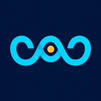

WardStock is a personal health log for anxiety, cardiac symptoms, sleep, and everything that steadies a hard day — built to be exact when it matters and simple enough to reach for in the moment.
LEEWARD, N. — the side sheltered from the wind. Where a ship finds its steadiest water.
Anxiety and cardiac episodes don't wait for a calm moment to happen. WardStock is built to be opened one-handed, mid-squall, and to hold everything steady until you can look back and see the pattern.
WardStock is built in two pieces, deliberately. One is the vessel you sail — always reachable, wherever you are. The other stays at harbor, at home, doing the deeper work in private. Nothing about how it's split is an accident: the thing you need to always be able to open stays simple and open; the thing doing the heavy analysis runs quietly ashore, on hardware you own — never shipped out to someone else's cloud.
At Sea — WardStock
The vessel you sail
|
At Harbor — The wherewhen Engine
 The work done ashore
|
The seven-day dashboard reads like a deck of signal flags — color carries the meaning, so a glance tells you more than a paragraph could. Every flag opens straight into the log behind it.
Not a dashboard for its own sake — a steadier way to hold the details, so the pattern is there to see when you need it, and out of the way when you don't.
Personal use only. One vessel, one crew, one log.
Every analysis below runs quietly at harbor, on the wherewhen engine — never in the cloud. Reference numbers and names match the Analysis page exactly, so a chart on screen and an entry here are always the same thing. "Input" is what feeds it; "Reads" is what it actually computes from that input — a trend, a correlation, a count, or (for a few) just a clean record with nothing computed at all.
Sleep duration, sleep efficiency, HRV, resting heart rate, and the bedtime/wake-time chart (#1-4 and #19) all come from the same underlying idea, worth spelling out since it isn't obvious: a wearable ring or watch doesn't hand over one clean "you slept from X to Y" answer — it reports sessions, and wherewhen has to decide which session is actually last night.
This build reads an Oura ring, but nothing about the approach is specific to Oura — any device that reports a session's start and end time, whether it was real sleep or a false alarm, and roughly how long it lasted would fit the same model. Oura happens to be what Ward wears.
Oura itself already sorts sessions into a few kinds: a real overnight sleep, a shorter confirmed nap, a late-evening nap credited to the next day, and — usefully — sessions Ward reviewed and rejected as a false alarm (the ring mainly tracks movement on the hand it's worn on, so sitting still at a desk for long enough can occasionally get misread as a nap). Only the real-overnight kind counts as "the night" for these charts; false alarms and short naps are left out, and if more than one real overnight session somehow exists for one calendar night, the longer one wins.
Bedtime is simply when that session started. Wake time is Oura's own answer for when it truly ended — sustained time out of bed, not just the first stir — used directly whenever the device provides it. A brief middle-of-the-night wake-up that leads right back to sleep is the device's own call, not something wherewhen merges or splits; it just reads whatever boundaries the device already decided on. Any reading clearly outside what's physically possible (a negative duration, an efficiency over 100%) is dropped before it's ever considered, on any device.
Every chart in the Chart Room is fed by one of these — the standing crew of automated jobs that run quietly at harbor, on the wherewhen engine, whether or not anyone's looking. "Runs" is how often; a few are deliberately hands-on-the-wheel only, for moments too consequential to leave to a timer.
Every one of these runs entirely at harbor — nothing here calls out to WardStock except to read or write the exact fields it already understands, and nothing raw ever leaves the home network.